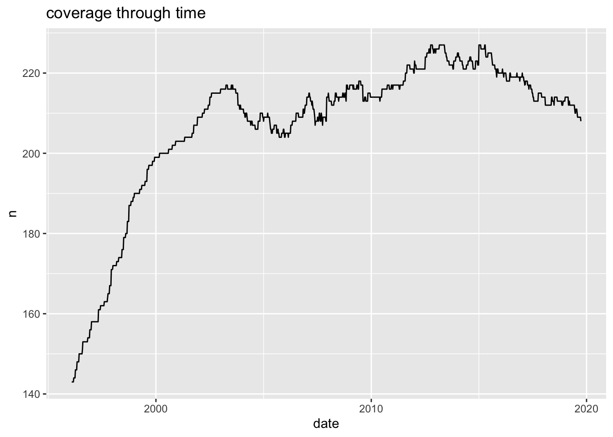

7 An empirical test using Sourth African equities
In this chapter, we test the various approaches outlined above for constructing risk-based portfolios using South African equity data. There are two sources of variation in this experiment: variation in risk-based portfolio type and variation in estimation risk reduction technique, all combinations of which are outlined in table 6.1. Each combination of portfolio-technique approach will be referred to as a pair.
7.1 Data and methodology
The available data for this experiment are weekly total-returns for all equity stocks included in the Johannesburg Stock Exchange (JSE) All Share Index (ALSI) over the period ranging from the \(5^{th}\) January 1996 to the \(1^{st}\) November 2019. Weightings of the shares in the ALSI are also available, although this is a monthly series. This historical vector of the weights of the MW portfolio through time is denoted \(\hat{w}^{\text{mw}}_t\).
The investigation uses a rolling estimation window of \(T = 400\)8 weekly observations to construct portfolios. Weekly data inputs are used with monthly rebalancing because of the high data volume requirement from chapter 6. The constructed portfolio \(\hat{w}_{t_i}\) will be held out-of-sample over the interval \([t_i, t_{i + 1}]\), where \(t_i\) denotes a month’s end. The entire holding period is from the \(30^{th}\) of September 2003 to the \(27^{th}\) of September 2019 a total of 16 years. Portfolios are constructed for two different asset universes; namely, the \(40\) largest stocks and the \(100\) largest stocks. The separation is to test the effect on portfolio performance of an investor broadening their universe. This methodology is outlined for each rebalancing date:
Of the stocks in the ALSI with a data history of at least length \(T\), choose the \(N\) stocks with the largest market weights.
Use the \(N \times T\) matrix of sample returns to find asset weights for the relevant portfolio-technique pair.
Hold the found portfolio \(\hat{w}\) for one month, record the returns \(\hat{r}\), and calculate the portfolio turnover.
This experiment is specific to this data and method. Therefore, it is important to outline some limitations of the results. Although framework (3.7) is broad, this experiment only analyses portfolios constructed with South African equity returns, and cannot be used to state facts about the portfolio construction process generally. The budget, long-only and maximum weight constraints were all applied for this experiment. Specifically the maximum weight constraint used is \(\alpha = 0.1\). The choice intends to provide a consistent basis for comparison across portfolio-technique pairs and ensures similarity to practical applications. Shares that have missing data were excluded at each rebalancing date with a filter, therefore the MW portfolio, where \(N = 40\) may not be representative of the JSE Top 40 index. Transaction costs are ignored due to the liquid nature of the largest stocks, although this is a potential area for future improvement on the backtesting methodology.
7.2 Results
Before the results are reported, specific metrics that illustrate the effect of each technique and portfolio need to be introduced. The first is turnover (TO). It measures the magnitude of trading required on each rebalancing date. If there are \(m\) rebalancing dates, then the TO is calculated as: \[\begin{align} \text{TO} & = \frac{6}{(m - 1)} \sum_{i = 1}^{m - 1} \sum_{j =1}^{N} |\hat{w}_{t_i, j}^\triangle - \hat{w}_{t_i, j}|, \end{align}\] where \(\hat{w}_{t_i, j}^\triangle\) is the buy-and-hold weight of the \(j^{th}\) asset just before the rebalance at time \(t_i\). The turnover is annual and one-way only; hence, the scaling factor of \(\frac{6}{m-1}\). For a higher TO, the investor has increased risk when rebalancing that they will not enter into the new portfolio at the current market price. The maximum possible value of the TO is \(1200\%\), and the investor achieves it if they switch from one single stock portfolio to another at every rebalancing date.
The next reporting metric is maximum drawdown (MDD), the definition of which requires the notion of cumulative wealth. The investor’s cumulative wealth at time \(t_j\) is their return from time \(t_0\) until time \(t_j\) on a portfolio of one initial unit investment, and it is defined as: \[\begin{align*} W_{t_j} &= \prod_{i = 1}^{j} (1 + \hat{r}_{t_i}), \end{align*}\] where \(\hat{r}_{t_i}\) is the return realised over the interval \([t_{i - 1}, t_i)\). The MDD is the biggest loss in cumulative wealth for the entire investment period, and is formulated as: \[\begin{align} \text{MDD} & = \underset{t_j \in \{t_1, ..., t_m\}}{\text{argmax}} \Big \{ \underset{t_i \in \{t_1, \text{...}, t_j\}}{\text{argmax} \{W_{t_i} \}} - W_{t_j} \Big \} \; . \end{align}\] MDD is an essential measure for money managers because excessive drawdowns lead to redemptions in their funds. (Magdon-Ismail and Atiya 2004)
The last two measures are measures of concentration. As stated earlier, the risk-based investor is making a trade-off between weight concentration and risk concentration. A standard for weight concentration at a rebalancing date, the inverse Herfindahl index, has already been defined. But the IHI is general and could apply to multiple types of weights. For allocation weights the IHI at time \(t_i\) is given as: \[\begin{align} N^{\text{eff}}_{t_i} &= \frac{1}{\sum_{j = 1}^N w_{t_i, j}^2} \; , \end{align}\] where $N^{}{t_i} $ can be interpreted as the number of equal-weighted stocks the investor’s portfolio is equivalent to. The notation reflects the idea that the IHI represents the number of effective stocks in the portfolio. The upper bound of $N^{}{t_i} $ is \(N\) and the lower bound in the presence of a maximum allocation constraint is: \(({\lfloor \frac{1}{\alpha} \rfloor \cdot \alpha^2 + (1- \lfloor \frac{1}{\alpha}\rfloor \cdot \alpha)^2})^{-1}\) , which is derived in appendix B.2. For the case when \(\alpha = 0.1\) the lower bound is \(10\). Risk-weights can be taken instead of capital weights to measure the effectiveness of an asset on portfolio volatility. Since the TRCs sum to the portfolio volatility, the risk contributions can be scaled into risk-weights so that they sum to \(1\). The risk-weight for the \(j^{th}\) asset at time \(t_i\) is given as: \[\begin{align} \text{RW}_{t_i, j} &= \frac{\text{TRC}_{t_i, j}}{\sqrt{w_{t_i}^\intercal \Sigma w_{t_i}}}\; , \end{align}\] where the inverse Herfindahl index approach can be applied again. The risk-weight IHI is written as: \[\begin{align} N^\mathrm{rw}_{t_i}(RW_{t_i}) &= \frac{1}{\sum_{j = 1}^N \text{RW}_{t_i, j}^2} \;. \end{align}\] If \(\Sigma\) is positive semi-definite, then the lower bound is \(1\) even in the presence of the maximum allocation constraint, because one asset could have a positive weight and considerable volatility. The upper bound is once again \(N\). The concentration measures are reported as averages across all of the \(m\) rebalancing dates.
Let us first discuss the results for the GMV portfolios. The main objective of constructing GMV portfolios is to reduce the out-of-sample volatility of returns. The main aim of each GMV-technique pair is the same, but performance is measured against the GMV-SCM pair. Therefore, it makes sense to define a measure of each GMV-technique pair performance in the same way as Richard and Roncalli (2015), as a volatility reduction over the GMV-SCM pair: \[\begin{align} \mathcal{VR}(w|w_{\text{gmv-scm}}) & = \frac{\sigma(w_{\text{gmv-scm}}) - \sigma(w)}{\sigma(w_{\text{gmv-scm}})}, \end{align}\] where the \(\sigma(\cdot)\) function measures a portfolio’s volatility.
7.2.1 going to R’ify
7.3 Code
7.3.1 Data reading in and cleaning
##
## Attaching package: 'lubridate'## The following objects are masked from 'package:data.table':
##
## hour, isoweek, mday, minute, month, quarter, second, wday, week, yday, year## The following objects are masked from 'package:base':
##
## date, intersect, setdiff, unionlibrary(magrittr)
library(rlang)
library(ggplot2)
library(knitr)
# sourcing data ------------------------------------------------------------------------------------
weekly_ret <- read_xlsx(
"data/data_emlyn.xlsx",
sheet = "Weekly TRets",
na = c("", "NaN")
)## New names:
## * `` -> ...1## New names:
## * `` -> ...1## New names:
## * `` -> ...2# cleaning data ------------------------------------------------------------------------------------
weekly_ret <- weekly_ret %>%
rename("date" = "...1") %>%
mutate(date = as.Date(.data$date)) %>%
pivot_longer(setdiff(colnames(weekly_ret), c("...1"))) %>%
drop_na() %>%
arrange(.data$date) %>%
mutate(join_col = as.integer(format(.data$date, '%Y%m')))
month_ret <- month_ret %>%
rename("date" = "...1") %>%
mutate(date = as.Date(.data$date)) %>%
pivot_longer(setdiff(colnames(month_ret), c("...1"))) %>%
drop_na() %>%
arrange(.data$date) %>%
mutate(join_col = as.integer(format(.data$date, '%Y%m')))
alsi_weights <- alsi_weights %>%
rename("date" = "...2") %>%
select(-.data$SumCheck) %>%
mutate(date = as.Date(.data$date) + 15) %>% # weights are at end of month, making start
pivot_longer(setdiff(colnames(alsi_weights), c("SumCheck", "...2"))) %>%
drop_na() %>%
arrange(.data$date) %>%
mutate(join_col = as.integer(format(.data$date, '%Y%m')))
# joining data -------------------------------------------------------------------------------------
full_ret <- weekly_ret %>%
left_join(
month_ret,
by = c("join_col", "name"),
suffix = c("_week", "_month")
) %>%
select(
date = .data$date_week,
.data$name,
week_ret = .data$value_week,
month_ret = .data$value_month,
.data$join_col
) %>%
left_join(
alsi_weights,
by = c("join_col", "name"),
suffix = c("_full", "_weights")
) %>%
select(
date = .data$date_full,
.data$name,
.data$week_ret,
.data$month_ret,
month_weight_start = .data$value,
month_index = .data$join_col
)
# keeping complete cases only ----------------------------------------------------------------------
complete_per <- sum(complete.cases(full_ret))/nrow(full_ret)
# data is 98.2% complete
incomp_weight_per <- sum(full_ret[!complete.cases(full_ret),]$month_weight_start, na.rm = TRUE) /
sum(full_ret$month_weight_start, na.rm = TRUE)
# but only 0.2% of the weight is in the incomplete data, so it is largely
# isolated to the long tail of small stocks that are outside of the
# top 40 and 100 and are therefore not needed in this research
full_ret <- full_ret[complete.cases(full_ret),]
# plot coverage
full_ret %>%
filter(.data$month_weight_start >= 0) %>%
group_by(date) %>%
count() %>%
ggplot(aes(.data$date, .data$n)) +
geom_line() +
ggtitle("coverage through time")
# getting indices ----------------------------------------------------------------------------------
top40_month_weights <- full_ret %>%
group_by(.data$month_index) %>%
filter(.data$date == min(.data$date)) %>%
mutate(size_order = rank(-.data$month_weight_start)) %>%
filter(.data$size_order <= 40) %>%
mutate(top40_weight = .data$month_weight_start / sum(.data$month_weight_start)) %>%
ungroup() %>%
select(.data$month_index, .data$name, .data$top40_weight)
top100_month_weights <- full_ret %>%
group_by(.data$month_index) %>%
filter(.data$date == min(.data$date)) %>%
mutate(size_order = rank(-.data$month_weight_start)) %>%
filter(.data$size_order <= 100) %>%
mutate(top100_weight = .data$month_weight_start / sum(.data$month_weight_start)) %>%
ungroup() %>%
select(.data$month_index, .data$name, .data$top100_weight)
full_ret <- full_ret %>%
full_join(
top40_month_weights,
by = c("month_index", "name")
) %>%
full_join(
top100_month_weights,
by = c("month_index", "name")
) %>%
select(
.data$date,
.data$name,
.data$week_ret,
.data$month_ret,
.data$top40_weight,
.data$top100_weight,
alsi_weight = .data$month_weight_start,
.data$month_index
) %>%
replace_na(list(top40_weight = 0, top100_weight = 0))
saveRDS(full_ret, file = "data/full_ret.rds")
head(full_ret, 10)## # A tibble: 10 x 8
## date name week_ret month_ret top40_weight top100_weight alsi_weight month_index
## <date> <chr> <dbl> <dbl> <dbl> <dbl> <dbl> <int>
## 1 1996-02-02 ABI -0.0314 0.0133 0 0.00104 0.000922 199602
## 2 1996-02-02 AXL 0.0436 0.0436 0 0 0 199602
## 3 1996-02-02 ACL -0.0886 0.0218 0 0 0 199602
## 4 1996-02-02 ACT 0 0.0833 0 0 0 199602
## 5 1996-02-02 ADR 0 0.250 0 0.0000499 0.0000440 199602
## 6 1996-02-02 AEL 0.0208 -0.265 0 0 0 199602
## 7 1996-02-02 AEN 0.0455 -0.130 0 0 0 199602
## 8 1996-02-02 AFE -0.0545 -0.106 0.00626 0.00598 0.00528 199602
## 9 1996-02-02 AFI 0 0.105 0 0.00109 0.000961 199602
## 10 1996-02-02 AFL 0 0 0 0 0 1996027.3.2 Data preparation (sample window history adjustment)
library(rlang)
library(magrittr)
library(dplyr)
library(data.table)
library(tidyr)
full_ret <- readRDS("data/full_ret.rds")
sample_est_wind <- 400
rebal_est_ranges <- full_ret %>%
select(.data$date, .data$month_index) %>%
distinct() %>%
mutate(start_date = shift(.data$date, sample_est_wind)) %>%
mutate(end_date = shift(.data$date, 1)) %>%
na.omit() %>%
group_by(.data$month_index) %>%
filter(.data$date == min(.data$date)) %>%
ungroup() %>%
select(.data$month_index, .data$start_date, .data$end_date)
model_rebal_dat <- tibble(month_index = rebal_est_ranges$month_index, data = list(NULL))
# Looping through to find data
for (i in seq_along(rebal_est_ranges$month_index)) {
# need to find full data histories first
full_hist_ids <- full_ret %>%
filter(.data$date <= rebal_est_ranges[i, ]$end_date &
.data$date >= rebal_est_ranges[i, ]$start_date) %>%
group_by(.data$name) %>%
count() %>%
filter(.data$n == sample_est_wind) %>%
pull(.data$name)
# then we can use %in% to get those with full histories
dat_now <- full_ret %>%
filter(.data$date <= rebal_est_ranges[i, ]$end_date &
.data$date >= rebal_est_ranges[i, ]$start_date &
.data$name %in% full_hist_ids)
# then re-allocate weights
hist_adj_weights40 <- dat_now %>%
group_by(.data$month_index) %>%
filter(.data$date == min(.data$date)) %>%
mutate(size_order = rank(-.data$alsi_weight)) %>%
filter(.data$size_order <= 40) %>%
mutate(histadj_top40_weight = .data$alsi_weight / sum(.data$alsi_weight)) %>%
ungroup() %>%
select(.data$month_index, .data$name, .data$histadj_top40_weight)
hist_adj_weights100 <- dat_now %>%
group_by(.data$month_index) %>%
filter(.data$date == min(.data$date)) %>%
mutate(size_order = rank(-.data$alsi_weight)) %>%
filter(.data$size_order <= 100) %>%
mutate(histadj_top100_weight = .data$alsi_weight / sum(.data$alsi_weight)) %>%
ungroup() %>%
select(.data$month_index, .data$name, .data$histadj_top100_weight)
# join back and prepare to save down
dat_out <- dat_now %>%
full_join(
hist_adj_weights40,
by = c("month_index", "name")
) %>%
full_join(
hist_adj_weights100,
by = c("month_index", "name")
) %>%
select(
.data$date,
.data$name,
.data$week_ret,
.data$month_ret,
.data$histadj_top40_weight,
.data$histadj_top100_weight,
.data$month_index
) %>%
replace_na(list(histadj_top40_weight = 0, histadj_top100_weight = 0)) %>%
mutate(month_index = rebal_est_ranges[i, ]$month_index) %>%
nest(data = c("date", "name", "week_ret", "month_ret", "histadj_top40_weight", "histadj_top100_weight"))
model_rebal_dat[i, ] <- dat_out[1, ]
}
saveRDS(model_rebal_dat, file = "data/model_rebal_dat.rds")
head(model_rebal_dat, 6)## # A tibble: 6 x 2
## month_index data
## <int> <list>
## 1 200310 <tibble [56,400 × 6]>
## 2 200311 <tibble [56,400 × 6]>
## 3 200312 <tibble [56,800 × 6]>
## 4 200401 <tibble [57,200 × 6]>
## 5 200402 <tibble [57,600 × 6]>
## 6 200403 <tibble [57,600 × 6]>References
Magdon-Ismail, Malik, and Amir F Atiya. 2004. “Maximum Drawdown.” Risk Magazine 17 (10): 99–102.
Richard, Jean-Charles, and Thierry Roncalli. 2015. “Smart Beta: Managing Diversification of Minimum Variance Portfolios.” In Risk-Based and Factor Investing, 31–63. Elsevier.
\(400\) weeks or \(7.69\) years may seem like an odd choice. It is a window that balances the need for enough estimation data, but also a lengthy out-of-sample test. For a longer data history, a larger estimation window could be used.↩︎